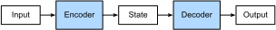

The Encoder–Decoder Architecture
In general sequence-to-sequence problems like machine translation (:numref:sec_machine_translation), inputs and outputs are of varying lengths that are unaligned. The standard approach to handling this sort of data is to design an encoder–decoder architecture (:numref:fig_encoder_decoder) consisting of two major components: an encoder that takes a variable-length sequence as input, and a decoder that acts as a conditional language model, taking in the encoded input and the leftwards context of the target sequence and predicting the subsequent token in the target sequence.
 :label:fig_encoder_decoder
Let's take machine translation from English to French as an example. Given an input sequence in English: "They", "are", "watching", ".", this encoder–decoder architecture first encodes the variable-length input into a state, then decodes the state to generate the translated sequence, token by token, as output: "Ils", "regardent", ".". Since the encoder–decoder architecture forms the basis of different sequence-to-sequence models in subsequent sections, this section will convert this architecture into an interface that will be implemented later.
using Pkg; Pkg.activate("../../d2lai")
using d2lai
using Flux
using Downloads
using StatsBase
using Plots
using CUDA, cuDNN
import d2lai: RNNScratch Activating project at `/workspace/d2l-julia/d2lai`Encoder
In the encoder interface, we just specify that the encoder takes variable-length sequences as input X. The implementation will be provided by any model that subtypes this base AbstractEncoder
abstract type AbstractEncoder <: AbstractModel endDecoder
In the following decoder interface, we add an additional init_state method to convert the encoder output (enc_all_outputs) into the encoded state. Note that this step may require extra inputs, such as the valid length of the input, which was explained in :numref:sec_machine_translation. To generate a variable-length sequence token by token, every time the decoder may map an input (e.g., the generated token at the previous time step) and the encoded state into an output token at the current time step. However this is handled in the next section and we currently only define the abstract class and the init_state method
abstract type AbstractDecoder <: AbstractModel end
function init_state(decoder::AbstractDecoder, args...) endinit_state (generic function with 1 method)Putting the Encoder and Decoder Together
In the forward propagation, the output of the encoder is used to produce the encoded state, and this state will be further used by the decoder as one of its input.
abstract type AbstractEncoderDecoder <: AbstractClassifier end
function (model::AbstractEncoderDecoder)(enc_X, dec_X, args...)
enc_all_outputs = model.encoder(enc_X, args...)
dec_state = init_state(model.decoder, enc_all_outputs, args...)
return model.decoder(dec_X, dec_state)[1]
endIn the next section, we will see how to apply RNNs to design sequence-to-sequence models based on this encoder–decoder architecture.
Summary
Encoder-decoder architectures can handle inputs and outputs that both consist of variable-length sequences and thus are suitable for sequence-to-sequence problems such as machine translation. The encoder takes a variable-length sequence as input and transforms it into a state with a fixed shape. The decoder maps the encoded state of a fixed shape to a variable-length sequence.
Exercises
- Suppose that we use neural networks to implement the encoder–decoder architecture. Do the encoder and the decoder have to be the same type of neural network?
- Besides machine translation, can you think of another application where the encoder–decoder architecture can be applied?